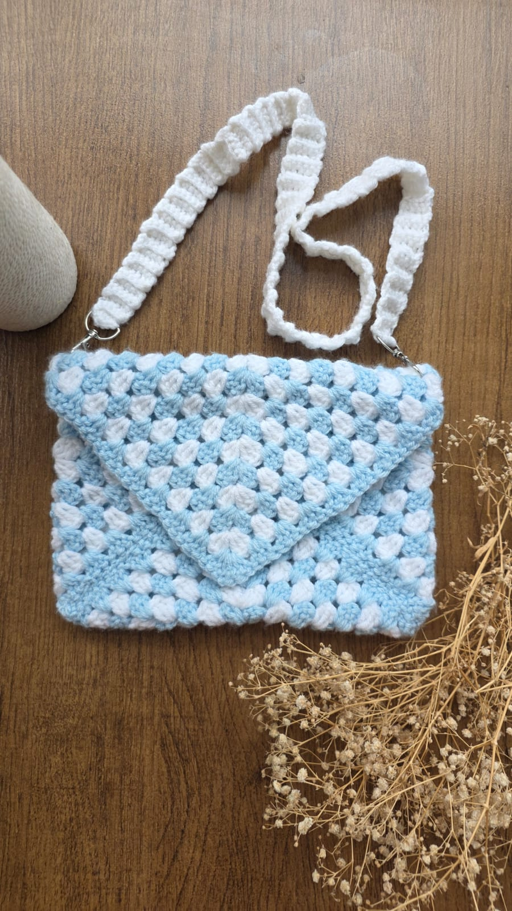

Bag project
Blue Puff Bag
A cloud-soft shoulder bag with a charming bobble texture.
View project →Made by hand
Every project here is something I have actually made, loved, and learned from.

Bag project
A cloud-soft shoulder bag with a charming bobble texture.
View project →Your next project
Duplicate the Loopsoy project template, add your own photos, materials, pro tip, and tutorial link—then add it to this page.
Open project template →